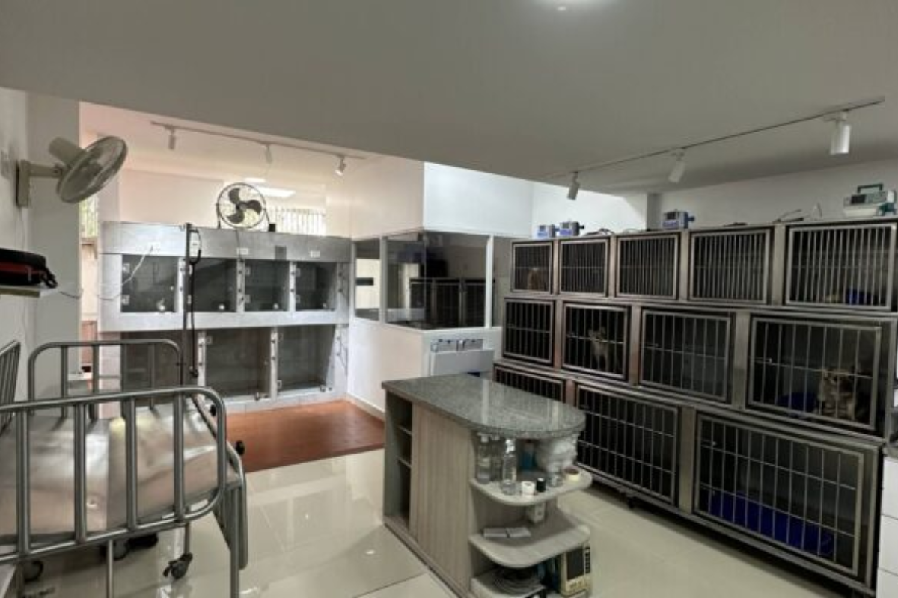
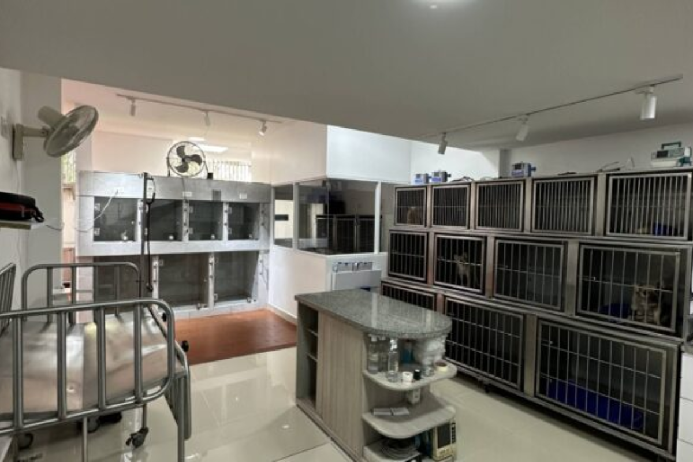

Conoce Nuestra Clínica Veterinaria
En nuestra clínica, el bienestar animal es nuestra prioridad. Descubre nuestra historia, equipo, instalaciones y todo lo que nos hace únicos.
Nuestra Historia
Nuestra clínica fue fundada en 2024, con la misión de ofrecer servicios veterinarios de alta calidad. Creemos en el amor y respeto por cada mascota, y trabajamos diariamente para garantizar su bienestar.
Valores
- Compromiso
- Amor por los animales
- Excelencia profesional
Metas a Largo Plazo
Nuestra meta es convertirnos en un referente nacional en el cuidado animal, promoviendo la adopción responsable y campañas comunitarias de bienestar animal.
Nuestro Equipo
Dra. Ana López
Especialista en cirugía veterinaria.
"Ayudar a las mascotas a vivir una vida plena es mi pasión."
Dr. Juan Pérez
Especialista en medicina preventiva.
"Cuidar de los animales es cuidar de nuestras familias."
Nuestras Instalaciones
Contamos con áreas modernas y equipadas para garantizar el mejor cuidado de tus mascotas.
 

Compromiso con la Comunidad
Participamos activamente en campañas de vacunación, adopción y educación sobre el cuidado responsable de mascotas.
- Campañas de vacunación gratuitas.
- Colaboración con refugios locales.
- Charlas educativas en escuelas y eventos comunitarios.
Certificaciones y Reconocimientos
Somos una clínica certificada por la ULEAM y hemos recibido reconocimientos por nuestra labor comunitaria y excelencia en el cuidado animal.